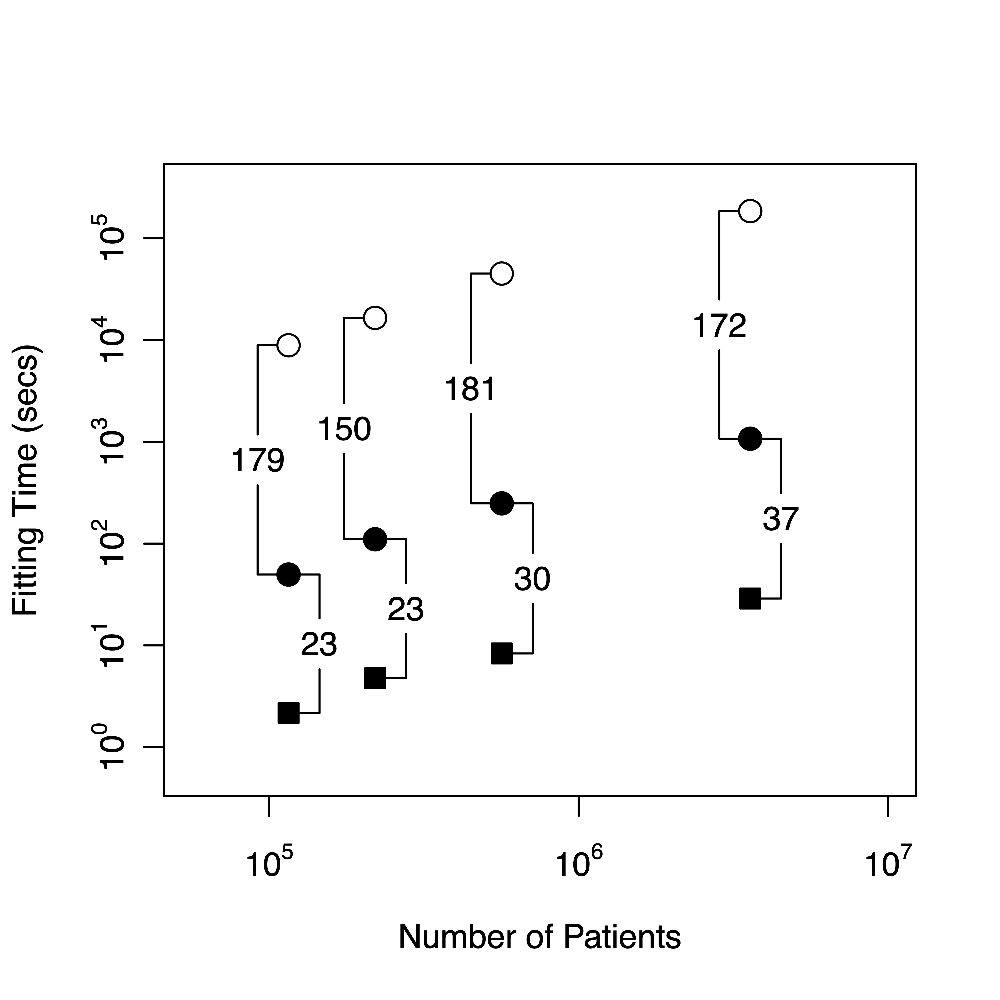

install.packages("microbenchmark")
remotes::install_github("suchard-group/CppMetaProgrammingTutorial")High-performance statistical computing
Biostat 218
1 Introduction
In these lectures we will learn about:
- Under-the-hood
Rcomputing - Compile-time optimization strategies
- Operation fusion
- Meta-programming using expression-templates

2 Developers needed!
Time-varying survival models: unique data representations
Massive parallelization: constructing an environment with data source, HADES toolstack and GPU access
Emerging inference proceedures: Bayesian, \(L_0\)
3 Additional dependencies for lecture
Please install
4 Use more than a compiled language
Rcpp is a great interface between R and C++
- But there is (much) more \(\ldots\)
Compile-time optimization via templated linear algebra libraries
RcppEigen,RcppArmadilo- Expression templates are a form of meta-programming (a program that writes a program)
Quiz
What happens when we write:
r <- rnorm(1e+06)
fourR <- r + r + r + r5 Computational matrix algebra
Start by re-writing in C++
Then use syntactic sugar (see Sugar.h) to write: lhs + rhs
6 Beware of temporaries at scale
To count the # of temporaries and copies, use a thin-wrapper around Rcpp classes
7 No performance penalty for wrapped class
library(microbenchmark)
library(CppMetaProgrammingTutorial)
microbenchmark(
run1 = execAlgebraicExpression(r,r,r,r),
run2 = execSimpleLoop(r,r,r,r, reps = 1, optLevel = 0),
times = 100L, unit = "milliseconds")Unit: milliseconds
expr min lq mean median uq max neval
run1 9.705906 10.19944 18.94845 21.32826 23.58619 61.20085 100
run2 9.584922 10.20022 19.87779 20.89899 23.95905 69.16079 100execSimpleLoop wraps vectors, calls algebraic expression (optLevel = 0) and returns event counts
run2 <- execSimpleLoop(r,r,r,r, reps = 1, optLevel = 0)
paste(run2["ctors"],run2["copies"])[1] "3 0"8 Ideal code via hand-crafted, fused transformation
template <typename NumericVector>
inline void Transformation(NumericVector& result,
const NumericVector& A, const NumericVector& B,
const NumericVector& C, const NumericVector& D) {
const int n = result.size();
for (int i = 0; i < n; ++i) {
// Fused all element-wise operations
result[i] = A[i] + B[i] + C[i] + D[i];
}
}microbenchmark(
# algebraic
run1 = execSimpleLoop(r,r,r,r, reps = 1, optLevel = 0),
# transformation
run2 = execSimpleLoop(r,r,r,r, reps = 1, optLevel = 1),
times = 100L, unit = "milliseconds")Unit: milliseconds
expr min lq mean median uq max neval
run1 9.062561 10.054378 15.592566 13.735905 18.718228 67.79371 100
run2 3.815011 4.218269 7.365742 4.350466 4.627527 68.22087 1009 Generic solution
template <typename NumericVector>
inline void AlgebraicExpressionTemplate(NumericVector& result,
const NumericVector& A, const NumericVector& B,
const NumericVector& C, const NumericVector& D) {
// Very modern technique (see Sugar.h)
using namespace ExpressionTemplates;
result = A + B + C + D;
// Compiler generates no temporarily intermediates.
// A + B + C + D translates into a tree of operation "types"
// called expression templates.
// Single operator= performs transformation by expanding
// and optimizing expression into code.
// Also provides lazy-evaluation, such that
// (A + B + C + D)[i] only evaluates for the i-th entry;
// Particularly useful for sparse updates
}10 Very simple expression template class
template <class L, class O, class R> struct Expression {
typedef typename ExpressionTraits<L>::RefType lhsRef;
typedef typename ExpressionTraits<R>::RefType rhsRef;
Expression(lhsRef l, rhsRef r) : l(l), r(r) { }
double operator[](const unsigned int index) const {
return O::eval(l[index], r[index]);
}
};
struct Plus { // Operation as a type
static double eval(const double a, const double b)
{ return a + b; }
};
template <class L, class R>
Expression<L,Plus,R> operator+(const L& l, const R& r) {
return Expression<L,Plus,R>(l, r); // Syntactic sugar
}Our expression tree operates as (((A,+,B),+,C),+,D)[i]
11 Generic solution achieves hand-crafted performance
microbenchmark(
# hand-crafted transformation
run2 = execSimpleLoop(r,r,r,r, reps = 1, optLevel = 1),
# expression template
run3 = execSimpleLoop(r,r,r,r, reps = 1, optLevel = 2),
times = 100L, unit = "milliseconds")Unit: milliseconds
expr min lq mean median uq max neval
run2 3.989886 4.241268 5.631394 4.320186 4.419866 24.03703 100
run3 3.560421 3.999161 6.329397 4.117239 4.253410 25.06073 100Straight-forward to extend to many operations on vectors and matrices. Here we will just use component-wise \(+\), \(-\), \(\times\) and \(/\) and scalar-multiplication (see Sugar.h)
- Review: Algebraic expression \(\rightarrow\) unique class-type known to compiler
Compiler / architecture dependence
Relative performance of our very simple expression templates depends heavily on compiler.
- Best to use a hardened expression template library
Results here use gcc v12
12 Fused transformation-reduction
In cyclic coordinate descent, we require 1D gradients and Hessians (scalars) of the model log-likelihood
\[ L(\boldsymbol{\beta}) = \mathbf{Y}' \mathbf{X} \boldsymbol{\beta} - \mathbf{1}' \text{log}\left[ \mathbf{1} + \text{exp} \left( \mathbf{X} \boldsymbol{\beta} \right) \right] , \]
\[ \frac{\partial L}{\partial \beta_j} = \mathbf{Y}'\mathbf{X}_j - \mathbf{1}' \mathbf{W} \text{ and } \frac{\partial^2 L}{\partial \beta_j^2} = - \mathbf{1}' \left[ \mathbf{X} \times \left( \mathbf{X}_j - \mathbf{W} \right)\right] \] where \[ \mathbf{W} = \frac{\text{exp} \left( \mathbf{X} \boldsymbol{\beta} \right) \times \mathbf{X}_j}{\mathbf{1} + \text{exp}\left( \mathbf{X}\boldsymbol{\beta} \right)} \]
Scalar operations on several tall vectors (transformation)
Inner produces = sums (reduction)
Intermediate values shared, but unneeded later
13 Vanilla gradient and Hessian
template <typename NumericVector>
inline void AlgebraicExpression(
double& gradient, double& hessian,
const NumericVector& EXB, const NumericVector& Xj) {
using namespace ComponentWiseOps; // Specify sugar
// Algebraic transformation
NumericVector G = EXB * Xj / (1.0 + EXB);
NumericVector H = G * (Xj - G);
// Reduction
gradient = 0.0; hessian = 0.0;
for (int i = 0; i < EXB.size(); ; ++i) {
gradient += G[i]; hessian += H[i];
}
}expXb <- exp(rnorm(1E6)); Xj <- rnorm(1E6)
run0 <- execComplexLoop(expXb,Xj, reps = 1, optLevel = 0)
paste(run0["grad"],run0["ctors"],run0["copies"])[1] "418.414145465602 5 0"14 Expression templated gradient and Hessian
template <typename NumericVector>
inline void Transformation(
double& gradient, double& hessian,
const NumericVector& EXB, const NumericVector& Xj) {
using namespace ExpressionTemplates; // Very modern technique
NumericVector G(EXB.size()), H(EXB.size());
// Expression templated transformation
G = EXB * Xj / (1.0 + EXB); // operator= executes
H = G * (Xj - G); // NB: Could generate G/H simultaneously
// Reduction
gradient = 0.0; hessian = 0.0;
for (int i = 0; i < EXB.size(); ++i) {
gradient += G[i]; hessian += H[i];
}
}run1 <- execComplexLoop(expXb,Xj, reps = 1, optLevel = 1)
paste(run1["grad"],run1["ctors"],run1["copies"])[1] "418.414145465602 2 2"15 Fused transformation and reduction
template <typename NumericVector>
inline void FusedTransformationReduction(
double& gradient, double& hessian,
const NumericVector& EXB, const NumericVector& Xj) {
using namespace ExpressionTemplates; // Very modern technique
// Expression template construction
auto G = EXB * Xj / (1.0 + EXB);
auto H = G * (Xj - G); // Nothing gets executed
// Fused transformation-reduction
gradient = 0.0; hessian = 0.0;
for (int i = 0; i < EXB.size(); ++i) {
gradient += G[i]; hessian += H[i];
}
}run2 <- execComplexLoop(expXb,Xj, reps = 1, optLevel = 2)
paste(run2["grad"],run2["ctors"],run2["copies"])[1] "418.414145465602 0 0"16 Performance gain
microbenchmark(
run0 = execComplexLoop(expXb, Xj, reps = 1, optLevel = 0),
run1 = execComplexLoop(expXb, Xj, reps = 1, optLevel = 1),
run2 = execComplexLoop(expXb, Xj, reps = 1, optLevel = 2),
times = 100L, unit = "milliseconds")Unit: milliseconds
expr min lq mean median uq max neval
run0 17.301715 23.139982 25.936554 24.603705 27.222155 84.55785 100
run1 9.658007 10.011493 14.172302 10.186246 16.970785 68.73204 100
run2 9.147757 9.459029 9.609944 9.561267 9.708306 10.56919 100Fused transformation-reductions:
- Avoid intermediates
- Reduce memory-bandwidth
- Let compiler optimize scalar operation order (not shown)
- Easily generalize for SIMD, multi-core and many-core
17 Multi-core parallelization
Some options:
OpenMP: minimally intrusive for embarassing parallel, compiler-dependent
Thread Building Blocks (Intel): surprisingly performant, previously no Windows
C++11 threads: requires R \(\ge\) 3.2 (on Windows)
RcppParallel- Uses TBB on Mac/Linux, open-source light-weight threading on Windows
- Almost as expressive as C++11 threads
- Automatic build via
install.packages("RcppParallel")
18 Multicore transformation and reduction
RcppParallel requires a small amount of boiler-plate wrapping:
template <typename NumericVector>
struct Reducer : public RcppParallel::Worker {
// Thread-safe containers
RcppParallel::RVector<double> EXB, Xj;
double gradient; double hessian;
Reducer(const NumericVector EXB, const NumericVector Xj)
: EXB(EXB), Xj(Xj), gradient(0), hessian(0) {}
Reducer(const Reducer& r, RcppParallel::Split)
: EXB(r.EXB), Xj(r.Xj), gradient(0), hessian(0) {}
// API: Operate over a range
void operator()(std::size_t begin, std::size_t end);
// API: Join results
void join(const Reducer& rhs);
};- Work gets executed in
operator()andjoin
19 Multi-core transformation and reduction
void operator()(std::size_t begin, std::size_t end) {
using namespace ExpressionTemplates; // Very modern technique
auto G = EXB * Xj / (1.0 + EXB);
auto H = G * (Xj - G); // Nothing gets executed
for (; begin != end; ++begin) {
gradient += G[begin]; hessian += H[begin];
} // All work executed in loop
}
void join(const Reducer& rhs) {
gradient += rhs.gradient; hessian += rhs.hessian;
}microbenchmark(
serial = execComplexLoop(expXb, Xj, reps = 1, optLevel = 2),
parallel = execComplexLoop(expXb, Xj, reps = 1, optLevel = 3),
times = 100L, unit = "milliseconds")20 R interface to RcppParallel
library(RcppParallel)
setThreadOptions(numThreads = 1)
microbenchmark(
serial = execComplexLoop(expXb, Xj, reps = 1, optLevel = 2),
parallel = execComplexLoop(expXb, Xj, reps = 1, optLevel = 3),
times = 100L, unit = "milliseconds")- TBB (usually) does no extra work if:
- insufficient threads, or
- task size too small
- Simple transformation via
paralleFor(), running totals viaparallel_scan()(TBB)
21 Massive parallelization on GPUs
Graphics processing units (GPUs) are inexpensive, dedicated numerical processors, designed for rendering computer graphics
- GPUs contain 1000s of processing cores on a single chip; several chips can fit in a desktop PC
- Each core carries out the same operations in parallel on different input data – single program, multiple data (SPMD) paradigm
Extremely high arthimetic intensity if one can transfer the data onto and results off of the processors quickly
22 Self-controlled case series
Cases-only dataset ranges
- \(N\) = 115K to 3.6M patients, taking \(J\) = 1224 to 1428 different drugs in \(K\) = 3.8M to 75M expsoure eras
- Fitting largest original drained 51 hours (pt-estimate)

- Genkin/Wu/Park (white circles), all sparse on CPU (black circles), all sparse on GPU (black squares)
- 51 hours \(\rightarrow\) 29 seconds
- Makes cross-validation and full Bayesian inference possible
- Off by an order-of-magnitude on hyperparameter \(\lambda\)